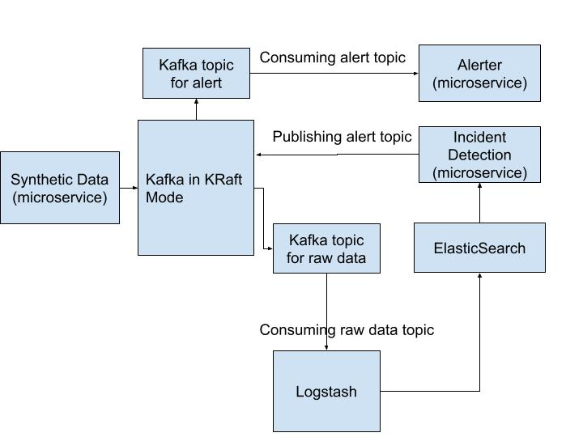

During work, I was tasked with designing and implementing an alerter tool to notify a specific set of users using an existing Elasticsearch database. The input came from an API gateway, which was fed into Elasticsearch. A Java program then fetched data from Elasticsearch and alerted users.
The issue was that since Elasticsearch and Logstash were open-source with licensing limitations, there were restrictions on the amount of data that could be processed. If Elasticsearch crashed, the API gateway was also affected. This project is an attempt to improve the design and add an additional feature that could be useful to the alerter.
NOTE: we could have stuck with either java only stack or python only stack
The following is an overview of what we are trying to build here:
The source code can be found here
We will be using Docker Compose to run our application. The docker-compose.yml will have services for elasticsearch, logstash , kafka and other microservices. A snip it of the same can be seen below.
We ensure that Kafka, microservices, and the Elastic Stack are in the same network (from the above image - kafka-network) so as to simulate deployment of services in various servers but in the same network.
Usefull commands:
docker-compose up -d - Start the services in detached mode.docker-compose down -v - Stop and remove existing containers. The -v flag ensures volumes are removed for a clean start.The purpose here is to generate synthetic data. In our case the data will be resembling a generic API response. This module will also act as a kafka producer (i.e., a application that publishes (writes) events to a Kafka cluster).
We are using confluent_kafka python library in this project. Ofcourse other python library are available, but for our purpose confluent_kafka is well-suited for use with Confluent Cloud and Confluent Platform. Basically I am keeping in mind the enterprise applications, which relates to most of my work.
We will be configuring producer as follows
conf = {'bootstrap.servers': '{kafka host}:{port}'}
producer = Producer(conf)
and publishing to our topic as follows
producer.produce('{topic}', key={key}, value = {message}, callback={function to handle kafka delivery report} )
producer.poll(0) # poll to handle delivery report
To ensure all messages are delivered (and to handle errors), it is good practice to wrap the producer in a try except finally block and placing producer.flush() in the finally block
Triggering Data Generation:
Use the following endpoint to generate data:
http://localhost:8080/data-gen/<number-of-entries>
This can be triggered via Postman or a curl GET request.
Kafka can act as a buffer for data, allowing us to perform data aggregation and transformation before indexing it into Elasticsearch.
Kafka is running in Kraft mode (i.e., without Zookeeper as a controller). This is a fairly recent addition to kafka and based on the support seen, I believe this might the future direction of production ready deployment of kafka.
As such, some important configuration to keep in mind will be as follows:
- KAFKA_ENABLE_KRAFT=yes # Enable KRaft mode (no ZooKeeper required)
- KAFKA_CFG_NODE_ID=1
- KAFKA_CFG_PROCESS_ROLES=controller,broker
- KAFKA_CFG_CONTROLLER_QUORUM_VOTERS=1@{kafka host}:9093
Kafka Topic Management:
docker exec -it {kafka container name} kafka-topics.sh --create --topic raw-data-topic --bootstrap-server localhost:9092 --partitions 1 --replication-factor 1
docker exec -it {kafka container name} kafka-topics.sh --list --bootstrap-server localhost:9092
We run these services using docker compose.
Assuming there are no filtration required, the logstash.conf can be as staright forward as below:
input {
kafka {
bootstrap_servers => "{kafka host}:{port}"
topics => ["{topic name}"]
codec => "json"
}
}
output {
elasticsearch {
hosts => ["http://{elasticsearch host}:{port}"]
index => "{index name}"
}
stdout { codec => rubydebug } # Print logs for debugging
}
To check if data is being indexed in Elasticsearch:
curl -X GET "http://{elasticsearch host}:{port}/{index name}/_search?pretty"
Primary purpose of this module is to fetch data from Elasticsearch based on queries and determine incident worth alerting.
Implementation Details:
query = {
"query" : {
"range": {
"@timestamp": {
"gte": "now-5m/m",
"lte": "now/m"
}
}
},
"_source" : [ "@timestamp", "message" ]
}
elasticsearch package and fetch based on the above mentioned query.
es = Elasticsearch(f"http://{HOST}:{PORT}")
rel = scan(
client = es,
query = query,
index = '{index name}',
raise_on_error=True
)
result = list(rel)
sleep()We will discuss the anomaly detection module and alert module in a seperate blog.